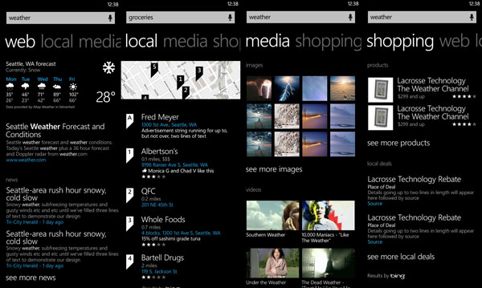
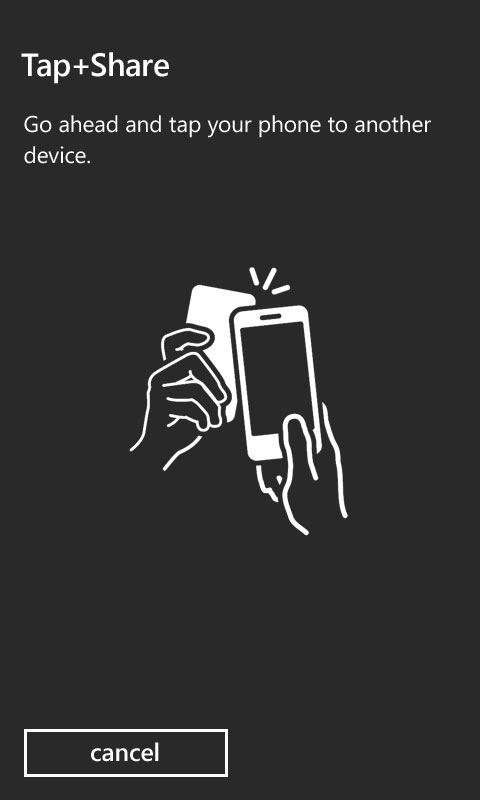
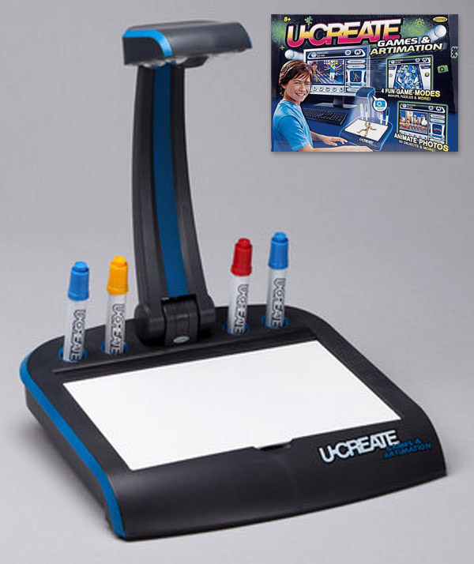

Career Timeline
Two decades of product design across broadcast, mobile, and enterprise software. For additional background, visit my LinkedIn profile.
I always have a project running on the side, literally these days since AI is burning tokens while I do other things. Take a look at my side projects.
AI Transformation
Partner Design Director
10/15/24
Leading product design for Core Agent, Messaging, Framework, Platform, and Consumer groups as Teams moves toward an AI-first future. The work spans both what we build and how we build it.
Startup
Head of Design
9/16/22
Led product design and frontend engineering at EchoMark, a security startup. EchoMark's SaaS platform enables organizations to protect email and files from leaks and identify the source when they occur. Learn more at echomark.com.
Calling, Meetings, Devices
Partner Design Director
7/01/19
After two years in Bangalore building Microsoft's India Design studio for Teams, I returned to lead design for Calling, Meetings, and Devices across teams in Bellevue, WA and Prague. Highlights include the Dynamic Stage layout system and Together Mode—both shipped during a period of rapid growth driven by the pandemic.
Chat, Files, Search
Principal Design Manager
11/01/14
Among the founding designers on Microsoft Teams, I joined during early incubation and grew with the product through rapid scale. Over five years I expanded from hands-on design across messaging, files, search, and core product framework to leading a multidisciplinary team of 18 across UX, Visual Design, Research, and UX Engineering.
Mylio
UX Designer
1/01/13
Led initial UX design for Mylio, a cross-device photo management tool. The product has evolved significantly since my involvement, and while I don't have visuals to share, it's a meaningful part of my timeline.
Undisclosed
Sole Developer & UX Designer
1/01/13
A technical product built as the sole engineer and UX designer, in partnership with a marketer and product manager. The project was acquired by a Fortune 50 company.
Camera
UX Designer
1/15/11
Led the UX redesign of the Windows Phone camera and designed the Lenses extensibility feature, enabling third-party developers to create deeply integrated photo-capture experiences within the native camera app.
Search
UX Designer
1/15/11
Redesigned the Windows Phone search results experience, moving from rigid category-based sorting to a relevance-first layout that surfaces the most useful results at a glance.

NFC
UX Designer
1/15/11
Designed the NFC tap-to-share experience with a focus on eliminating unnecessary UI. The goal was to make sharing feel as effortless as the physical gesture—a significant interaction challenge that called for deliberately minimal visual complexity.

KIN UI
UX Designer / Prototyper
6/15/08
My entry into mobile UI design, following work in broadcast and toy design. KIN gave me the opportunity to work on complex UX problems across the platform, and I owned end-to-end design and prototyping for four or more apps and features on the phone.
Digital Whiteboard
Inventor
10/1/2007
A side project exploring natural user interface design that grew into a full product. UCreate Games and Artimation shipped through Mattel and reached retail stores nationwide.

Characters and Environments
Lead Designer
01/01/07
At Jelly Telly, a small startup, I contributed across the full production pipeline—designing and building everything from physical puppets to digital environments, including filming, compositing, and editing.
Broadcast Creation
Modeler
7/01/06
My first professional role out of college was a high-intensity production challenge. Within three months of joining, I built an entirely new environment for the VeggieTales cast, consolidated animation work from a team of artists, and managed rendering, compositing, editing, and re-dubbing to deliver a full season to NBC and Telemundo.